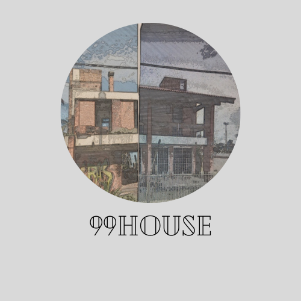

<!DOCTYPE html>
<html>

<head>
	<meta charset="utf-8">
	<meta name="viewport" content="width=device-width">
	<title>99 HOUSE</title>
	<link href="style.css" rel="stylesheet" type="text/css" />
</head>
<script src="script.js">

</script>

</html>

<body>
  
	<h1> 
    
     
  
  99HOUSE: SUMMARY

	</h1>

   

	<center>
		
</center>    
      
<em><p><b>Location: Av.Tripolli,926-Itaguaçu do Ubatuba-São Francisco do Sul,SC,Brazil.


  <svg xmlns="http://www.w3.org/2000/svg" width="16" height="16" fill="currentColor" class="bi bi-geo-alt-fill" viewBox="0 0 16 16">
  <path d="M8 16s6-5.686 6-10A6 6 0 0 0 2 6c0 4.314 6 10 6 10zm0-7a3 3 0 1 1 0-6 3 3 0 0 1 0 6z"/>
</svg> </em></p></b>
  <iframe src="https://www.google.com/maps/embed?pb=!1m18!1m12!1m3!1d363.00114394910315!2d-48.5279110806866!3d-26.18297591728156!2m3!1f0!2f0!3f0!3m2!1i1024!2i768!4f13.1!3m3!1m2!1s0x94d94524c4aaf643%3A0x19b7e55727752e1e!2sAv.%20Tripolli%2C%20926%20-%20Do%20Ubatuba%2C%20S%C3%A3o%20Francisco%20do%20Sul%20-%20SC%2C%2089240-000!5e0!3m2!1spt-BR!2sbr!4v1635271923009!5m2!1spt-BR!2sbr" width="600" height="450" style="border:0;" allowfullscreen="" loading="lazy"></iframe> </p>       

<em><p><b>  Why did you choose this name?</em></p></b>

        

<i><p>At first, the number of the house was because of the plaque that existed in one of the columns, it was half off but even so I could see the mark written "99" so I stuck to that name.</p></i>

<em><p><b> Which year was it built?</p></em></b>

<i><p> The year was 1989, when a gentleman called "Ninfo" began to build his house, occupied by almost 7 houses in hectares, it was there that house 99 will give its show.</i></p>

<em><p><b>Why she was so important?</p></em></b>

<i><p> She was the second house built in that region and the most beautiful, anyone that passes truth that house says " omg different and wonderful house". Also the garden was very organized and clean with different types of plants like palms and sunflowers.</i> </p>

<em><p><b>  What happened?   </em> </p> </b>

<i><p>In 2012, there was a fight, after so many parties with expensive food and gathering of friends, the father of the family Mr. Ninfo said he could not stand so much suffocation, so he gave the inheritance of the house to his children in which until today they fight, with time and without money the house lost its charm and elegance until it was completely abandoned, vandals depreciated and stole furniture and parts of the house. </i></p>

<um><p>Interested in 99 House? Click Here!</p></um>
        <p> 
          
          <a href="galeria.html">here</a></p>

        

<em><p><b>Author:Costanza </p></em></b>
<center>

</center>


</body>

<center>

<html>
<head>
<um><p>Extra!</p></um>
</head>
<body>
<video width="420" height="340" controls="controls" 
  
<source src="video.mp4"
  type="video/mp4">
<object data="" width="320" height="240">
<embed width="420" height="240" src="video.mp4">
  
</object>
</video>

</body>

<center>


  <html>
<head>

</head>
<body>
<video width="420" height="340" controls="controls" 
  
<source src="video1.mp4"
  type="video/mp4">
<object data="" width="320" height="240">
<embed width="420" height="240" src="video1.mp4">
  
</object>
</video>

</body>


